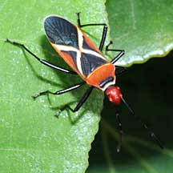
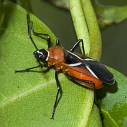
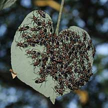

|
|
| arthropods text index | photo index |
| Phylum Arthropoda > Class Insecta |
| Cotton stainer
bugs Dysdercus decussatus Family Pyrrhocoridae updated Jan 2020 Where seen? This colourful insect is sometimes seen in numbers when the Sea hibiscus is fruiting. These colourful bugs feed on the seeds of the Sea Hibiscus (Hibiscus tiliaceus). Both adults and nymphs are often found in groups under the leaves or among the flowers of this plant. Another related Dysdercus feeds on the Portia tree (Thespesia populnea); it looks similar but has a black head. Features: Body about 1cm long. The adult has a red or black head with distinctive yellow cross on black wing cases with red bodies and black legs. The juveniles are all red, wingless with black legs and a black head. |
 An adult Bug. Pulau Semakau, Dec 08 |
 Some adults have a black head. Pulau Ubin, Jan 11 |
 Adult Bugs are often found in large numbers under Sea hibiscus leaves. Pasir Ris, Apr 09 |
| The bugs tend to form groups, which help them find mates. The small,
pale eggs are laid singly on the food plant or dropped on the ground
near the food plant. They hatch in 5-8 days into wingless nymphs which
lack the cross-markings on their backs (they do not have a larval
stage). Hatchlings gather near their egg shells, then continue to
feed in groups. They moult 5 times (instars) before reaching the mature
stage whereupon they get their wings and characteristic cross-markings. They got their name because many Dysdercus species transfer microorganisms that stain the cotton bolls that they prefer to feed on. Bugs that feed on cotton grow larger and faster. Feeding on the cotton bolls not only stains them an indelible yellow as plant sap seeps out of the puncture wound, and microorganisms and fungus grows at the site. The feeding habit also damages the fibres by cutting them, and affects the growth of the cotton boll. Some species also damage other agricultural crops such as peaches. |


| Cotton stainer bugs on Singapore shores |
On wildsingapore
flickr
|
| Other sightings on Singapore shores |
Links
|